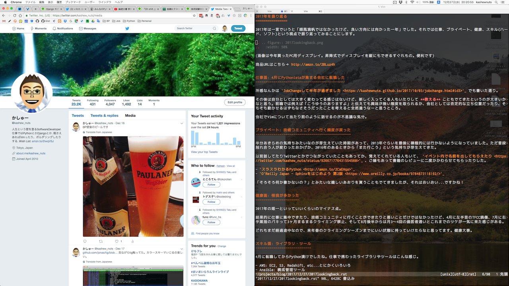
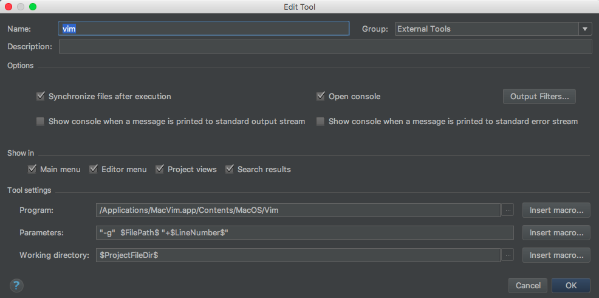
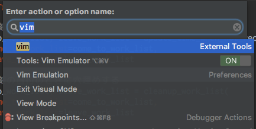

Sphinx + 翻訳 Hack-a-thon 開発合宿に参加しました #sphinxjp
一泊二日で行ってきました。イベントのURLは次のとおり。
Sphinx + 翻訳 Hack-a-thon 開発合宿 - connpass
会場は 国立女性教育会館 という埼玉県比企郡嵐山町にある宿泊研修施設で行いました。新宿から1.5hでいけて値段も手頃だったので作業に集中できてよかったです。
1日目やったこと
13:00ぐらいに集合して、合宿スタートしました。やったことは次のとおりです。
Djangoの公式ドキュメント https://docs.djangoproject.com/ja/ を翻訳
8月に翻訳プロジェクトにJOINして、ちょっと間が空いていたのでこれを期に取り組みました。実施したのは次のとおりです。
- Django-2.0のチュートリアル の未訳部分翻訳完了
- Djangoフォームの翻訳を進めました。ボリュームが大きくて翻訳率は1%進んだかなといった感じ。進められたのは次の通り
Djangoフォームの進捗率を出すのに、Django documentationの Django を使う 全体、つまりモデルやURL、テンプレート、Class-based views、マイグレーションなど topics 全体を対象にTransifexが計算してるので、進んでる感じがあまりしない…
翻訳したのはいずれかのタイミングで反映されると思います。
Vim談義をした
https://twitter.com/kashew_nuts/status/949984961754406912
夕飯→お風呂を堪能したあと軽くVim話をしたりしました。
- clipboard オプションを題材にVimのバージョン情報の見方、ヘルプの引き方、設定してあるオプションの見方を話した。
- 「デフォルトの動作を覚えるとプラグイン使わなくてもできますよ。」という話をした。
- 「必要だったらVimはビルドすることもありますよ」と話したら、「Gentoo以外でビルドしたくない！」と言われそうゆうものかーと思った。
「Vimモヒカンがいる」とかいわれたけどそんなことないよ。ヘルプの引き方知ってるだけだよ。
PCどうしよう話をした
某社(っていっても2社だけど…)のPCを使うツラみを共有した後、DellやThinkPad使えばいいんじゃねという話をした。注文したDellのPCはやくこないかなー。
この日は日付変わる頃に部屋に戻って、1時前には寝てたと思います。はやい。
2日目やったこと
珍しく7時前に起きてゆるゆると朝食に。
https://twitter.com/kashew_nuts/status/950175081644269568
朝ごはん食べてる時にちょっとアクシデントがあったけどごめんなさい。
ご飯を食べて作業場所に移動中、凍結していた池に突撃したりしました。
https://twitter.com/shimizukawa/status/950224587710545920
1日目につづき、Djangoフォームの翻訳を進めました。1日目に精根尽き果てたのか、この日はあまり捗らなかった… やること微妙に変えたりしてリフレッシュするのも大事ですね。
雑感
開発合宿は夏と冬に #pyhack でいったことしかなかったが、今回は場所も集中しやすい環境ができていたので作業が捗ったのはよかったです。 今後も無理にならないペースで翻訳とか携わっていけたらいいなと思います。
2017年を振り返る
2017年は「順風満帆ではなかったけど、納得感のある苦労とか楽しさを味わえて、結果的にはまともに良い方向に向かった一年」でした。それでは仕事、プライベート、健康、スキル(ハード、ソフト)という視点で振り返ってみることにします。

(画像は今年買ったPC用ディスプレイで作業してるところ。昇降式でディスプレイを縦にもできるすぐれものを購入したけど便利。URLはこちら http://amzn.to/2BLuz4h)
仕事面: 4月にPythonistaが集まる会社に転職した
所感なんかは JobChangeして半年が過ぎました でも書いた通り。
その後は自分としては大きく変わってる感じはないけど、新しく入ってくる人もいたりして 教える こともでてきたというのが大きいかなと思う。前職では例えば「こうゆうのありますよ」と伝えても興味が無い態度を取られるか、会社としては否定的な立ち位置だったり、そもそも動かせるはずもなさそうだったことを考えると全然違うなーと思うところ。
会社でVimについて当たり前のように話せるのが不思議な気分。
プライベート: 技術コミュニティへ行く頻度が戻った
半分あきらめの気持ちみたいなのが芽生えていた時期があって、2013年ぐらいを最後に積極的には行かないようになっていました。ただ普段触れ合う人が変わったおかげか、2016年のあるときから「また行こう」という気持ちが芽生えてきた。
以前話してたりTwitterとかでつながっていたこともあってか、覚えてくれている人もいて、 イベント内で名前を出してもらえたり 、ご縁もあって書籍のレビューに二度かかわらせてもらったりした。
「そろそろ何か書かないの？」とみたいな嬉しいあおりを貰うこともでてきましたが、それはおいおい…ですかね！
健康面: 怪我が多かった
2017年の唯一といっていいくらいのマイナス点。
結果的に仕事に集中できたり、技術コミュニティに行くことができたりと悪いことだけではなかったけど、4月に左手首のTFCC損傷、7月に右手薬指のパキって3ヶ月まるまるクライミング禁止、そして8月後半からは月3〜4回の歯医者通いとこれまでのツケが一気に来た感じがある。
どれもまだ経過途中なので、来年春のクライミングシーズンまでにいい状態に持っていけたらなと思ってます。健康大事。
スキル面: ライブラリ・ツール
4月に転職してからPython漬けでしたね。仕事で携わったライブラリやツールはこんな感じ。
- AWS: EC2, S3, Redshift, etc…とにかくいろいろ
- Ansible: 構成管理ツール
- Celery: 非同期処理
- CircleCI: インテグレーションツール
- Django: Webアプリケーションフレームワーク
- Git/Github, Mercurial: バージョン管理
- Redis: インメモリDB
- SQLAlchemy: DB操作ツール、ORMマッパー
- Sentry: エラーログ収集
- VirtualBox/Vagrant: 仮想環境
- gunicorn: HTTPサーバー
- nginx: HTTP,プロキシサーバー
- pytest: テスティングフレームワーク
- etc…
PyCharmのライセンスを購入してもらえるので、新しいものに触れるときも触りやすかった。と同時にVimもこれまでで一番使っていたと思う。両方が使える環境に身を置けているのはありがたい。
携わったプロジェクトでの要素技術が多くて、もうちょっと上手く使えるようになりたいところでもあるので、そのへんはもう少し鍛えたい。PythonやDjangoに詳しい人は社内にゴロゴロいるので自分もキャッチアップしていく。技術は考えるときのベースになるので、今後もキャッチアップしながら「すげー！！！」と感動する体験をしていきたい。
スキル面: エモい？ところ
いまだに エモい というのが何を指すのかわかりません。調べても答えがでないので誰か教えて欲しい…まあそれはおいておく。
この業界でいうとライブラリやツールの使い方がハードスキルだとすれば、対するのはソフトスキルということになるのだろうか。チャットツールをメインにして仕事をしてる都合上、「伝えたいことは適切なタイミングやスピードで伝わるようにする」のがなおさら重要だなと感じています。
コミニュケーションにおいて言語情報は7%しか占めていないと どこか で読みました。「そんなつもりで言ったんじゃなかった」とあとから本人がいっても、伝わってしまったことや感じた印象を後からくつがえすのは難しいなと思うので、 しっかりやる ためにはどうしたらいいかなぁと考えながら仕事してた気がします。もちろん1日でできることは限られてるし、つめるところはつめないといけないし、不完全でもはやく出さないときもあるしなので、答えはない。せめて「これ前にもあったぞ….」というコミニュケーションミスや勘違いを少なくしていけるようにしていきたい。
まとめ
つらつらと書いてみたら、オチがあるようなないような文章になった。来年のことは来年考えながらやっていく。
PyCharmからVimを開きたい
タイトルままです。 Twitterでもつぶやいた通り、IdeaVimってたまにバグりますよね！ そうゆう時、「PyCharmから、今開いているファイルをVimで開きたくなります。」
こんなこといってると、「Vimのキーバインドを使いたいなら最初からVim使えよ」と心の声がいってくるのですが、IdeaVimはIdeaVimで便利に使ってます。ということで、PyCharm(IntelliJ)からVimを開く方法を調べたのでメモ。
前提
- OS: macOS Sierra/High Sierra
- PyCharm: 2017.2.3
- IdeaVim: 0.48
やること
Preferences > Tools > External Tools から + を押して以下のように入力する
- Name: vim
- Program: /Applications/MacVim.app/Contents/MacOS/Vim (Vimのインストールしてる場所)
- Option: Open console のチェックを OFF
- Prameters: "-g" $FilePath$ "+$LineNumber$"
- Working directory: $ProjectFileDir$
設定が完了すると以下のようになります。

そして Find Action から vim と探してみると、今PyCharmで開いているファイルが、カーソルが当たってる行を指定して開けます。

やった！これでPyCharmからVimが開ける！
ハマったこと
GVimがアクティブになっていないとウィンドウが起動しない ことですね。
アクティブじゃない(GVimのプロセスが起動していない) と External tool 'vim' completed with exit code 0 と画面左下にメッセージが表示されるだけで終了してしまいました。
この時点で「GVimを常に起動しておけばいいや」という結論になったので深追いはしてませんが、GVimがアクティブじゃなくても起動してくれるようになると便利とは思いました。
まとめ
またひとつPyCharmからVimが使えるようになって便利